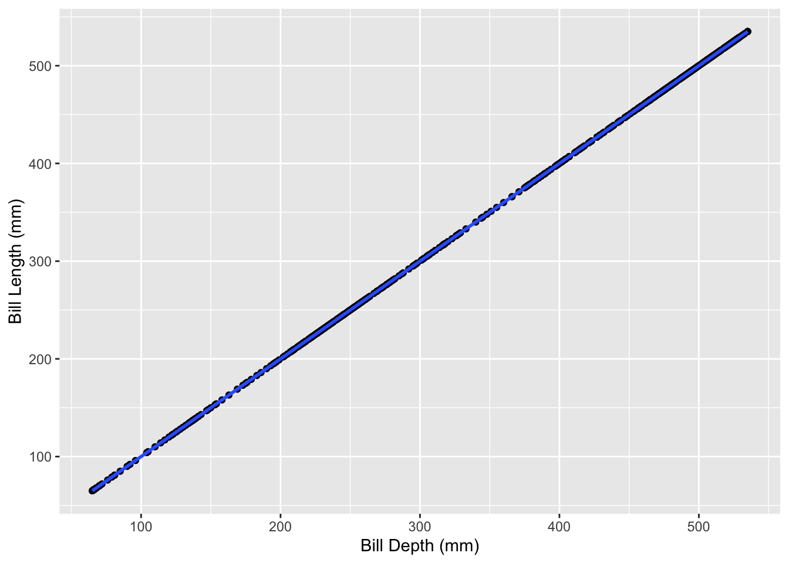
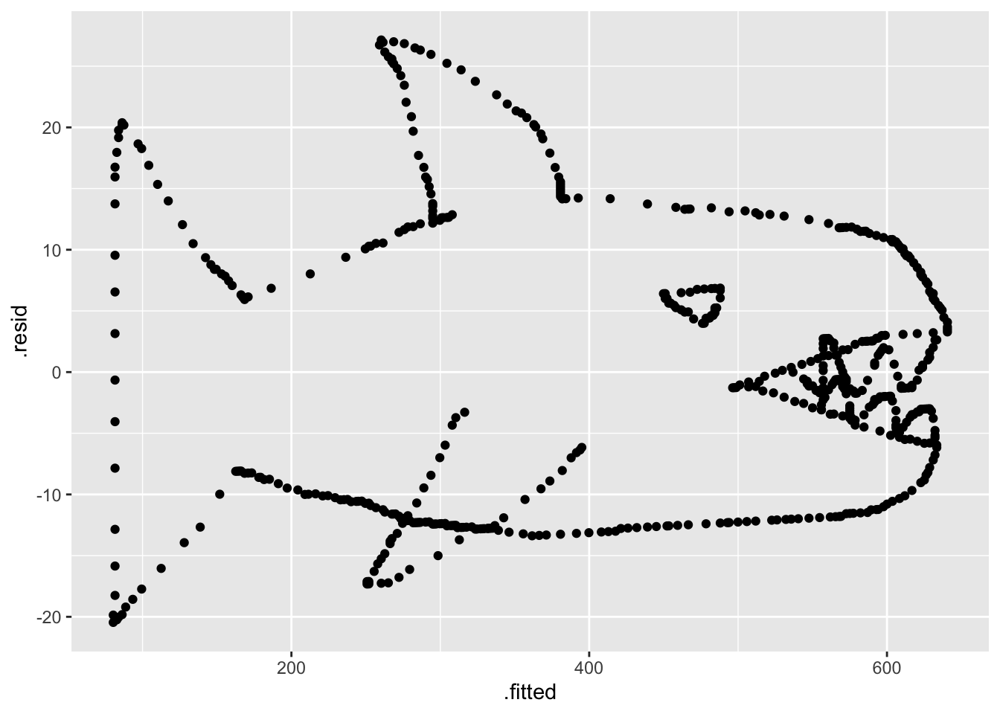

library(tidyverse)
library(here)PracticeActivity9
mystery_animal <- read_csv(here::here("supporting_artifacts", "learning_targets",'Practice Activity 9', 'mystery_animal.csv'))mystery_animal_lm <- mystery_animal |>
lm(weight_after ~ weight_before, data = _)
mystery_animal_lm
Call:
lm(formula = weight_after ~ weight_before, data = mystery_animal)
Coefficients:
(Intercept) weight_before
2.854 1.192 mystery_animal |>
ggplot(aes(x = weight_before, y = weight_before)) +
geom_point() +
stat_smooth(method = "lm") +
labs(x = "Bill Depth (mm)",
y = "Bill Length (mm)")`geom_smooth()` using formula 'y ~ x'
mystery_animal_lm |>
broom::augment() |>
ggplot(mapping = aes(y = .resid,
x = .fitted)) +
geom_point()
Warm Up
Question 1
What is the 95th percentile for trumpet weight?
qunif(p = 0.95, min = 1.5, max = 3.5)[1] 3.4Question 2
What is the 10th percentile for trombone weight?
qnorm(p = 0.10, mean = 4.6, sd = 0.8)[1] 3.574759Question 3
About what percent of trombones do you expect to be more than 5 pounds?
1- pnorm(q = 5, mean = 4.6, sd = 0.8)[1] 0.3085375Question 4
1 - pchisq(q = 5, df = 4)[1] 0.2872975Question 5
sim <- rnorm(100, mean = 4.6, sd = 0.8)
sum(sim < 4)[1] 27music_man <- function(n_tromb, n_cor, n_reed){
#vector of random distribution of trombone weight
trombones <- rnorm(n = n_tromb, mean = 4.6, sd = 0.8)
#vector of random distribution of cornet weight
cornets <- runif(n = n_cor, min = 1.5, max = 3.5)
#vector of random distribution of reed weight
reeds <- rchisq(n = n_reed, df = 4)
total_weight <- sum(trombones) + sum(cornets) + sum(reeds)
return(total_weight)
}
set.seed(1957)
my_weights <- rerun(.n = 1000,
music_man(n_tromb = 76,
n_cor = 110,
n_reed = (542 + 318 + 175)
)
) |>
flatten_dbl()sum(my_weights < 4532)[1] 7# 7 total weights out of 1000 are lower than his weight
# really unlikely to get 4352 weight if they we real instruments